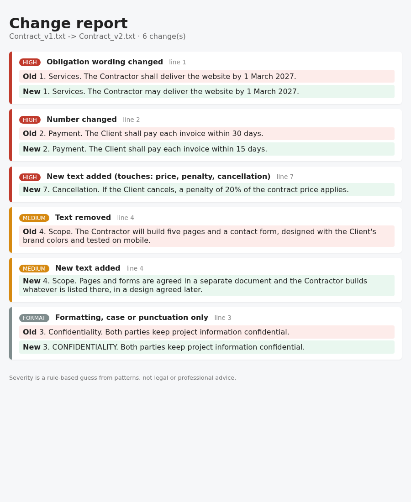

What it does
ChangeLens compares two versions of a document and reports each change with a severity and a reason, not a raw diff. A number that changed, a duty softened from shall to may, a new penalty clause: those are HIGH. A "What's Important?" mode hides formatting-only changes.
Severity per change
HIGH, MEDIUM, LOW or FORMAT, with the reason.
What's Important? mode
Hide formatting noise.
Word, PDF, Excel, text
Excel compared cell by cell.
HTML report
A styled report you can share.
Example
$ changelens demo/Contract_v1.txt demo/Contract_v2.txt
CHANGE REPORT
Contract_v1.txt -> Contract_v2.txt
6 change(s) detected
[HIGH] Obligation wording changed (line 1)
Old: 1. Services. The Contractor shall deliver the website by 1 March 2027.
New: 1. Services. The Contractor may deliver the website by 1 March 2027.
[HIGH] Number changed (line 2)
Old: 2. Payment. The Client shall pay each invoice within 30 days.
New: 2. Payment. The Client shall pay each invoice within 15 days.
[HIGH] New text added (touches: price, penalty, cancellation) (line 7)
New: 7. Cancellation. If the Client cancels, a penalty of 20% of the contract price applies.
Install
git clone https://github.com/mohamed-elshamy-ai/changelens
cd changelens
pip install -e .
changelens old.docx new.docx --important --html report.htmlHow it works
- Extract the text of both files.
- Match each block with its most similar block in the other version (Excel by cell address).
- Judge each difference: numbers, obligation words, negations, key legal and money words.
- Report in the terminal, JSON or HTML.
الشرح بالعربي
بتاخد نسختين من نفس الملف وبتطلعلك التغييرات الفعلية بدرجة خطورة. لو رقم اتغير أو كلمة التزام اتخففت (shall بقت may) أو اتضاف بند فيه غرامة أو إلغاء بيتصنف HIGH. تغيير الحروف أو التنسيق بس بيتصنف FORMAT ويختفي في وضع --important. بقواعد واضحة من غير AI.
Limits
- Severity is a rule-based guess, not legal advice. Read the HIGH items yourself.
- No OCR for scanned documents and no PowerPoint yet.
- Moved paragraphs show up as one removed and one added block.
- No desktop window yet.